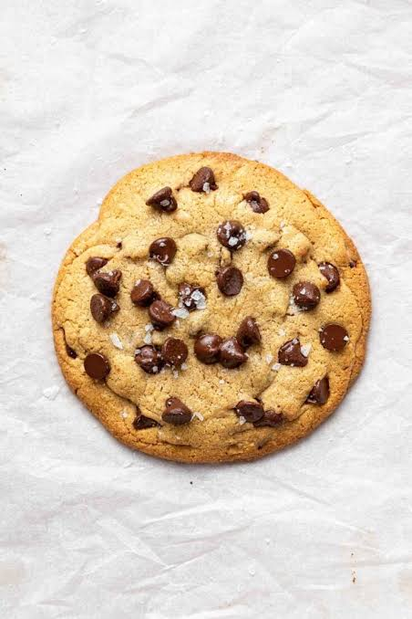
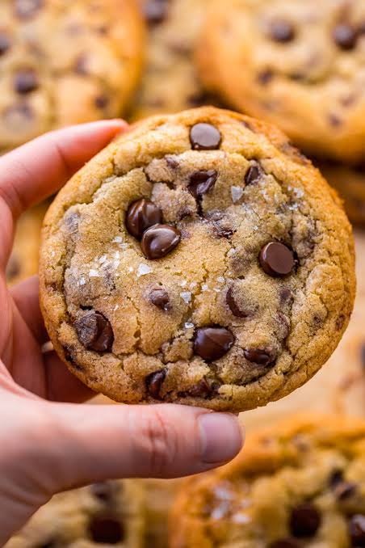
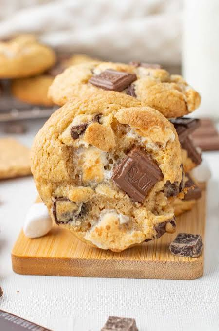
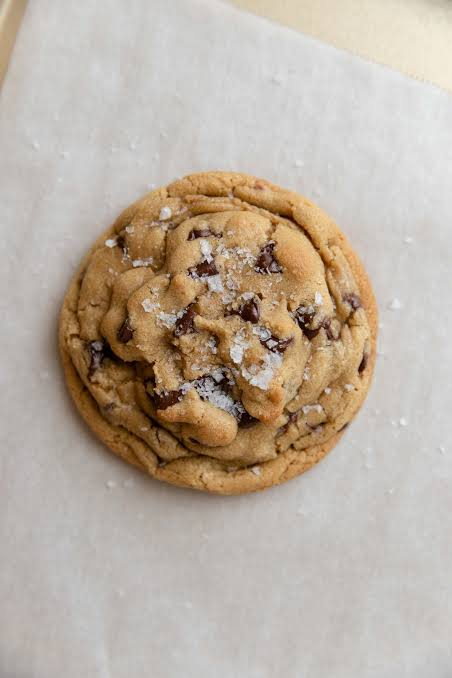

Baking isn't so hard once you follow something
Overview
why may people think it is difficult?
Baking can be used for various things. I'm talking about making desserts though, more specifically, cookies. Baking cookies can be difficult for many reasons: Underbaking, overbaking, loose dough, not enough ingredients used. Sometimes, the person may not be built for baking. Cookies are very delicate in the baking process, and require attention
But how should you bake?
To bake desserts such as cookies, you want to have all of your ingredients out beforehand, such as room temperature butter. Having your butter already out, and coming to room temperature will help mix together easier. Anything that has to stay refrigerated/colder temperature, keep it cold. Have your eggs, typically 2, and use self-rising flour in place of All Purpose. After following your preferred recipe, refrigerate your dough for 30 minutes, this makes it easier to form when placing on your baking sheet.



